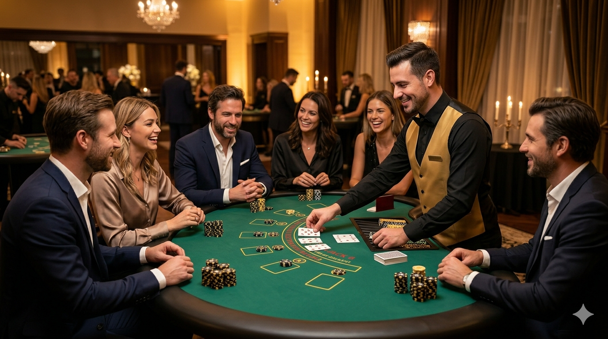

Luxe blackjack tafel
Een representatieve blackjack tafel die direct sfeer toevoegt aan de ruimte en goed past binnen een stijlvolle casino-opstelling.
Casino op locatie voor bedrijven en privé-events
Een blackjack tafel zorgt direct voor interactie aan tafel. Het spel is spannend, toegankelijk en ideaal voor gasten die graag actief meedoen. Met een professionele croupier, luxe tafel en verzorgde spelmaterialen voeg je eenvoudig een stijlvolle casino-ervaring toe aan jouw event.
Binnen 24 uur reactie • Vrijblijvend voorstel • Geschikt voor zakelijke en privé-events

Blackjack op locatie
Blackjack is één van de meest toegankelijke casinospellen voor een feest of zakelijke bijeenkomst. Gasten hoeven geen ervaren spelers te zijn om mee te doen. De regels zijn snel uit te leggen en doordat iedereen aan dezelfde tafel speelt, ontstaat er vanzelf interactie.
Een blackjack tafel past goed bij bedrijfsfeesten, personeelsavonden, gala’s, bruiloften, themafeesten en privé-events. De tafel werkt sterk als losse toevoeging, maar ook als onderdeel van een complete casinoavond met bijvoorbeeld roulette, poker of Rad van Fortuin.
Compleet verzorgd
Een representatieve blackjack tafel die direct sfeer toevoegt aan de ruimte en goed past binnen een stijlvolle casino-opstelling.
Inclusief de benodigde speelkaarten, fiches en materialen om de tafel compleet en verzorgd in te zetten.
Een croupier begeleidt het spel, legt de regels uit en zorgt voor tempo, interactie en een professionele uitstraling.
Blackjack is laagdrempelig en snel te begrijpen. Daardoor kunnen ook gasten zonder casino-ervaring makkelijk meedoen.
Met begeleiding
Voor de meeste events raden we aan om de blackjack tafel met croupier te boeken. De croupier zorgt voor duidelijke speluitleg, begeleidt iedere ronde en houdt het spel soepel en gezellig. Daardoor hoeven gasten geen ervaring met blackjack te hebben.
Er wordt gespeeld met fiches of speeldollars. De focus ligt op entertainment, beleving en contact tussen gasten. Dat maakt blackjack zeer geschikt voor zakelijke evenementen, privéfeesten en locaties waar entertainment en beleving centraal staan.
Veelzijdig inzetbaar
Een blackjack tafel werkt goed op events waar je gasten actief wilt betrekken. Het spel heeft een prettige balans tussen spanning, uitleg en interactie. Daardoor blijft de tafel gedurende de avond aantrekkelijk voor verschillende soorten gasten.
Richtprijs
Voor een blackjack tafel met professionele croupier kun je rekening houden met een prijsindicatie vanaf €395 inclusief croupier, spelmaterialen en tot 4 uur spelen, exclusief btw en transport. Extra uur: €100. Dit is een richtprijs voor een verzorgde invulling met blackjack tafel, spelmaterialen en begeleiding.
De exacte prijs hangt af van de locatie, duur van het event, het aantal tafels en eventuele extra wensen zoals decoratie, verlichting, fotografie of aanvullende casinotafels. Daarom maken we altijd een vrijblijvend voorstel op maat.
Meer variatie
Blackjack is sterk als interactieve tafel, maar komt nog beter tot zijn recht in combinatie met andere casinospellen. Voor een complete casinoavond kun je blackjack bijvoorbeeld combineren met roulette, poker of Rad van Fortuin. Zo ontstaat er meer afwisseling en kunnen gasten kiezen tussen snelle interactie, spanning en sfeer.
Herkenbaar, stijlvol en vaak de blikvanger van een casinoavond.
Geschikt voor gasten die langer aan één tafel willen spelen en wat meer competitie zoeken.
Feestelijk, laagdrempelig en ideaal voor snelle interactie met veel gasten.
Van aanvraag tot event
Geef aan waar en wanneer het event plaatsvindt, hoeveel gasten je verwacht en welke sfeer je zoekt.
We denken mee over het aantal tafels, de juiste combinatie van spellen en eventuele extra’s.
De blackjack tafel wordt netjes opgesteld en de croupier zorgt voor uitleg, begeleiding en sfeer.
Praktische antwoorden
Nee, dat is niet nodig. Blackjack is juist geschikt voor beginners. Met een croupier aan tafel krijgen gasten duidelijke uitleg en kunnen ze direct meedoen.
Nee, bij events wordt meestal gespeeld met fiches of fun money. Het draait om entertainment, interactie en beleving.
Een blackjack tafel wordt met croupier verzorgd. Voor de meeste events adviseren we dit, omdat de croupier zorgt voor speluitleg, tempo en professionele uitstraling.
Dat hangt af van de opzet en de doorloop van het event. Eén tafel is geschikt voor een kleinere groep of als onderdeel van een groter casino-aanbod. Bij grotere events adviseren we vaak meerdere tafels.
Ja, een losse blackjack tafel huren is mogelijk. Je kunt de tafel ook combineren met roulette, poker, decoratie of verlichting voor een complete casinoavond.
Als richtprijs kun je rekening houden met een bedrag vanaf €395 inclusief croupier, spelmaterialen en tot 4 uur spelen, exclusief btw en transport. Extra uur: €100. De definitieve prijs hangt af van locatie, duur en aanvullende wensen.
Vrijblijvend voorstel
Wil je weten wat een blackjack tafel kost voor jouw locatie en aantal gasten? Vraag vrijblijvend een voorstel aan. We denken graag mee over de juiste opstelling, het aantal tafels en de sfeer die past bij jouw event.